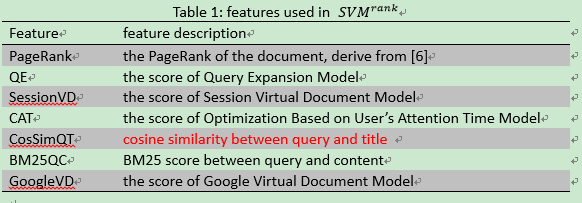

Session Track at TREC 2012回顾
Session Track是TREC的一个子任务，目标是根据用户和搜索引擎的交互Session信息提高检索质量。当时抱陈博大腿一起做的这个任务，学到了不少东西。
数据
Session Track提供了4种测试数据RL1-RL4，其中每一种都比前一种多一个信息。RL1只有最后需要查询的query词组，RL2相比RL1多了前几次session的query词组，RL3相比RL2多了前几次session的部分query结果，RL4相比RL3多了点击文档和停留时间信息。下面是2011年的部分数据示例。
Session track目标是想检验利用query的增量prior信息是否能持续提高检索效果，理想情况应该是效果RL4>RL3>RL2>RL1，其实这也应该是客观结果。
我们的做法
针对RL1没有什么附加信息，只能直接利用检索系统拉结果，这也是最终的召回结果了，后面只是在此基础上进行重排序而已。这里我们使用的是实验室的检索系统，说实话在这个任务上效果不太好。
RL2由于多了prior的query信息，所以我们可以参考查询扩展重构query，将所有的query term按照exp权重加权累加，得到一个新的带权重的query term list，然后和RL1结果计算BM25重排序。
RL3由于多了部分结果，我们可以基于此构建虚拟文档，利用该虚拟文档和RL1结果计算cosine重排序。
RL4多了点击和停留时间信息，这个没有太好的想法，参考了BUPT的方法，通过文档和被点击文档的相似度换算出停留时间，再重排序。
接下来我们采用pairwise的ranking svm融合上面的各种得分来学习重排序模型，利用2011年的relevance judgments结果数据进行训练，将模型应用到2012年数据输出score进行排序。2011结果数据中label包含-2/0/1/2/3，分布代表spam/not relevant/relevant/high relevant/navigational。
下面是比较重头的特征了，这里我们没有采用标题/url长度等raw feature，使用的是各种similarity等high level feature，如下图所示

最终我们提交了3组结果，每组包括RL1-RL4四个结果，具体方法和特征如下表所示：
结果
从下图可知RL4最好NDCG@10结果为0.2857，比直接通过检索系统返回结果0.1586提高了80.14%，可见ranking svm能利用prior session信息，很大程度的提高检索质量。直接检索结果比较差，如果该结果提高，再加入标题/url长度等各种raw feature，效果应该还可以提高。
Ranking SVM
Ranking svm是一种pairwise的排序算法，它将排序问题转化为一个分类问题，在给定query下，如果文档d1比d2更相关，我们把pair<d1,d2>作为一个新的正样本，否则作为一个负样本。
将排序问题转化为分类问题后，学习原理同svm。Ranking svm目标是学习一个排序函数f(x)=w*x+b，如果xi比xj更相关，我们希望f(xi)>f(xj)，转换为文档对表示就是<w,xi-xj> > 0。ranking svm的优化目标和svm类似，差别只在于svm是单点，ranking svm是pair：
其中w为参数向量, x为文档的特征,y为文档对之间的相对相关性, ξ为松弛变量，m为pair个数。
产生pair代码如下图所示
关于正负pair效果相同没有影响，这个问题其实很简单，可以这样理解：考虑pair< xi,xj>，约束条件(yi-yj)*w*(xi-xj) >= 1
- 正例xi > xj, yi-yj==1. –> 1*w*(xi-xj) >= 1
- 负例xi < xj, yi-yj==-1. –> -1*w*(xi-xj) >= 1 等价于 1*w*(xj-xi) >=1，这就相当于把负例反转变为正例(SVM样本没有Ranking SVM这种对称性，由于bias b)，所以整个训练过程中全部使用正例(负例反转为正例)，全部使用负例，正负混合都是等价的。
使用obj=hinge loss + regularization同理可证。